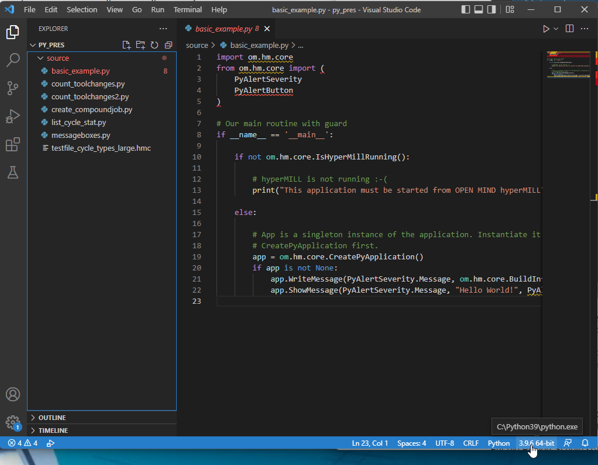

Working with Visual Studio Code¶
Installation¶
hyperMILL Python is optimized to work with Microsoft Visual Studio Code (code.visualstudio.com/Download).
Visual Studio Code (aka VSCode) exists also as a portable solution that does not need any installation. More about portable VSCode is here: code.visualstudio.com/docs/editor/portable
VSCode works in directory structure, all settings and extensions are created below the main directory. This is very convenient, if you
are working with different projects. All configuration settings are saved in a folder .vscode.
After the first start of VSCode, the user will be guided through a optional wizard. For example, the user can install an optional language pack.
Open first the folder that is containing the project (<Ctrl>+<K>, <Ctrl>+<O>). Remark: For debugging it seems to be substantially that you open the folder, where the source code is located.
Now you can create a new Python file or select an existing Python file. VSCode recognizes the file format (bottom-right corner shows Python) and wants to install a necessary extensions.
If you have opened an existing file, you will see a lot of errors in the source code. VSCode can switch between different Python installations, and it is likely that the wrong installations is chosen.
To use the full intellisense support, one has to use the right interpreter installation. The selection is done by the command key shortcut <Ctrl>+<Shift>+<P>. Now you get into the VSCode command window, where you have to search for “Python: Select interpreter” or “Python: Interpreter auswählen”.
VSCode suggests a list of found Python interpreters. The hyperMILL Python interpreter can be normally found here: C:\Program Files\OPEN MIND\Shared\<Version>\python\python.exe. If the interpreter is not shown, you can add it manually with “+ Enter interpreter path…”.
Selecting a wrong interpreter is a common source of errors! We are using Embedded Python, all information are stored in one directory. This ensure that we can deliver an own Python for each hyperMILL version.
Intellisense¶
hyperMILL Python has an integrated help and support for intellisense.
To run a script in hyperMill python, one has to call python.exe directly in the hyperMILL Python directory. At this point, only the
help system should be demonstrated briefly. Call python.exe in the command line and run the following commands in the Python interpreter.
import om.cam.core
help(om.cam.core)
help(om.cam.core.IsHyperMillRunning)
help(om.cam.core.PyJoblistSet)
In Visual Studio Code these information is used to provide a detailled intellisense.
The intellisense works for all elements like classes, methods, enumerations, …
If the return value is not recognized and no or insufficient intellisense is provided, try this workaround.
import om.cam.core
app = om.cam.core.PyApplication()
# In early versions the ``om.cam.core.PyDocument`` wasn't recognized
doc = app.GetActiveDocument()
# If you manually provide a return type, the intellisense works again. This maybe also necessary if the return type is unspecific.
doc : om.cam.core.PyDocument = app.GetActiveDocument()
Starting a Python script in hyperMILL¶
The script can be run in hyperMILL only after loading a document. The function is available in the “Jobs” tab of the hyperMILL browser in the extended context menu (<Ctrl>+<Right mousebutton>).
The last menu item “Run Python Script…” opens the dialog.

By clicking “Browse” or by directly entering the file name, you can select the Python script. If the script needs additional arguments, they can be entered in the “Arguments” field.
Both, filename and arguments are saved in a history, that is saved after closing the application.
The button “Run” starts the script, while “Debug” enters the debugging mode.
Error messages are shown in the text field: Interpreter errors in the script are shown like in the examples. The UI is blocked during execution of the script.
Limitations¶
The software packages, like pybind11 and th Debug Adapter Protocol are open source projects, that do not meet all of our requirements. Especially the execution and debugging of scripts within the application is not a common use case.
At the moment, we still have some problems establishing the connection between hyperMILL and VSCode. The main reason is that by an crash a socket is not close properly.
The name resolution of the script file seems to fail, if the source code is not directly in the working folder of VSCode. This causes that breakpoints are not found and also that hyperMILL will hang up, if the script is called twice.
Best workaround: Don’t debug. Write all variables to the (hyperMILL) console or in a file. Code can be changed very fast in VSCode and restarted by “Run” in hyperMILL. This is in many cases faster than attaching a debugger.